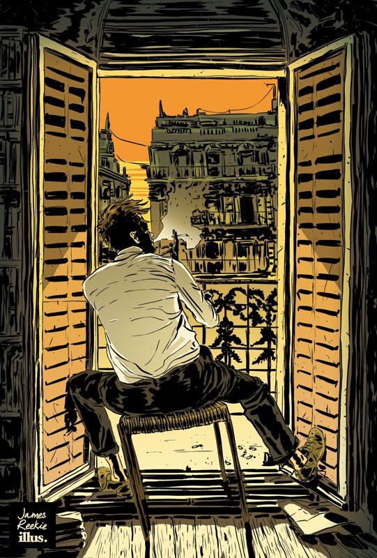
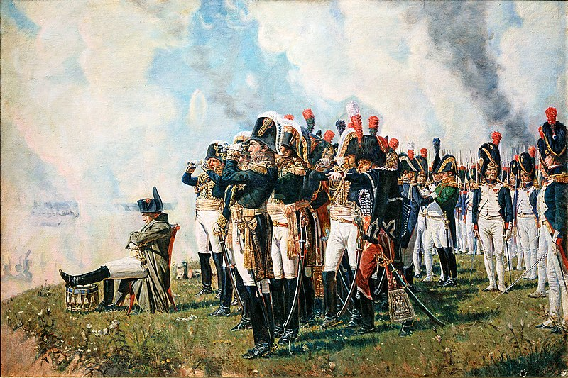
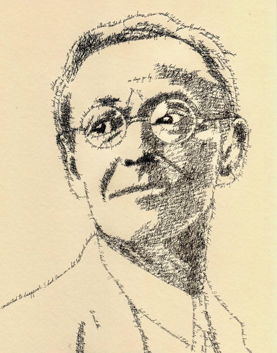
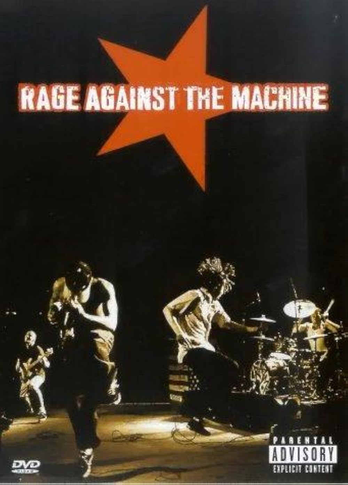
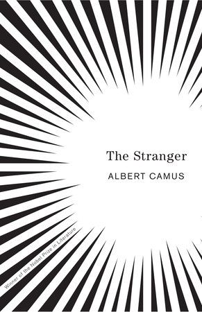
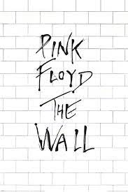

შემეცნების სასახლე - Palace Of Cognition
რეცენზიები:

ამბაკო შარაშენიძე - ალბერ კამიუს "უცხო" - რეცენზია
ალბერ კამიუს გასაოცარი ნაწარმოები „უცხო“, რომელიც კამიუმ 1942 წელს დაწერა, ერთი ახალგაზრდა კაცის, მერსოს ცხოვრებას ეხება, იგი ერთ დღეს იგებს რომ დედამისი თავშესაფარში გარდაიცვალა, მაგრამ მერსო ამის გამო დიდად არ ნაღვლიანდება...

ირაკლი ჯაბუა - ისტორიის ტოლსტოისეული დეკონსტრუქცია რომანის ,,ომი და მშვიდობა” მიხედვით.
„ომი და მშვიდობა“ განთქმულია იმ უდიდესი სიუჟეტური ლანდშაფტით, რომელსაც ტოლსტოი გვიხატავს. ნაწარმოები სიღრმისეული, დახვეწილი პერსონაჟებით გამოირჩევა, რომლებიც გაცოცხლებულია მათი ურთიერთობებით საზოგადოებასა და ისტორიულ ეპოქასთან...

ნიკოლოზ მეტონიძე - ჰერმან ჰესეს "ტრამალის მგელი" - რეცენზია
ჰერმან ჰესეს წიგნში „ტრამალის მგელი", ჩვენ, პროტაგონისტ ჰარი ჰალერს ვეცნობით, რომელიც ორმოცდაათიოდე წლის კაცია. ის თავის თავს ტრამალის მგელს უწოდებს და საკუთარი ცხოვრების მანძილზე, სიმარტოვეში ცდილობს ძალის პოვნას...
ანამარი ხაჩატუროვი - სილვია პლათის "ზარხუფი" - რეცენზია
სილვია პლათის ავტობიოგრაფიული, პირველი და უკანასკნელი რომანის ,,ზარხუფი“, საზოგადოებაში პოპულარობის მოპოვების ძირითადი მიზეზი ფემინიზმის თემაზე ღიად, თამამად საუბარი გახლავთ...

ირაკლი ჯაბუა - ბენდის “Rage Against The Machine“ პოლიტიკა და აქტივიზმი
როკ ჯგუფი “Rage Against the Machine“, 1991 წელს, ლოს ანჯელესში ჩამოყალიბდა. ის 90-იანი წლების ალტერნატიული როკისა და მეტალის სამყაროში, ერთ-ერთ ყველაზე მნიშვნელოვან და გარდამტეხ ჯგუფად მიიჩნევა...

მარიამ ბურდული - ალბერ კამიუს „უცხო" - რეცენზია
რომანში, „უცხო”, ალბერ კამიუ მკითხველს ეგზისტენციალურ საკითხებთან მიმართებით საკუთარ შეხედულებებს უზიარებს. ნაწარმოების მთავარი გმირი, მერსო ალჟირში მცხოვრები ახალგაზრდა ფრანგია...

ირაკლი ჯაბუა - პინკ ფლოიდი - “The Wall”
ბრიტანული როკ ჯგუფის, „პინკ ფლოიდის“ ალბომი „კედელი“ (“The Wall”) ყველასათვის ცნობილი უნდა იყოს. იგი, პროგრესული როკის ჟანრში ერთ-ერთ ყველაზე მნიშვნელოვან ნამუშევრად მიიჩნევა...